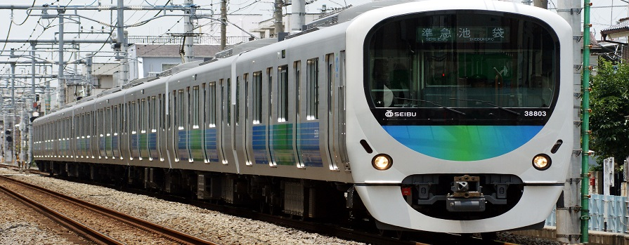
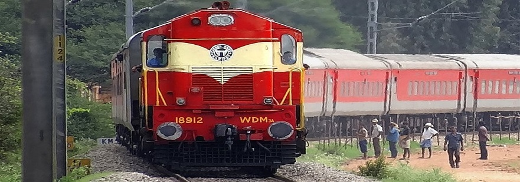
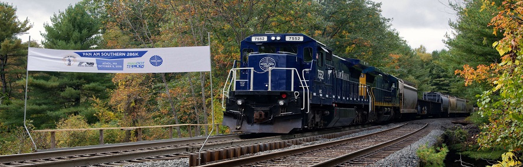

<!----<div id="carouselExampleControls" class="carousel slide" data-ride="carousel">
    <div class="carousel-inner">
      <div class="carousel-item active">
        
      </div>
      <div class="carousel-item">
        
      </div>
      <div class="carousel-item">
        
      </div>
    </div>
    <a class="carousel-control-prev" href="#carouselExampleControls" role="button" data-slide="prev">
      <span class="carousel-control-prev-icon" aria-hidden="true"></span>
      <span class="sr-only">Previous</span>
    </a>
    <a class="carousel-control-next" href="#carouselExampleControls" role="button" data-slide="next">
      <span class="carousel-control-next-icon" aria-hidden="true"></span>
      <span class="sr-only">Next</span>
    </a>
  </div>-->
 <h3>  Reservation Chart</h3>
    
 <body>
  
  
  <div class="form">
    <h3> Journey Details</h3>

    <i class="fa fa-subway"></i>&nbsp;&nbsp;<input type="text" class="jsp"  name="train" placeholder=" Train"/><br><br>
    <i class="fa fa-calendar"></i>&nbsp;&nbsp;<input type="date" class="jsp" name="date" placeholder="Date"/><br><br>
    

    &nbsp;&nbsp;<select   id="drop">
          <option selected>Please Select</option>
          <option value="KSR Bengaluru(16526)">KSR Bengaluru(16526)</option>
          <option value=" chennai Express(12610)">chennai Express(12610)</option>
          <option value="Chennai Mail(12658)">Chennai Mail(12658)</option>
        </select>
<br><br>

        <button type="button" class="btn btn-primary">Submit</button>

</div>


<div class="footer">

  <footer> &copy;copy right 2019</footer>	


  <p>There are 9 types of passenger trains, namely Gatiman Express, Rajdhani Express, Shatabdi/Janshatabdi Express, Duranto Express, Yuva /Garibrath Express, AC Express, Superfast, Mail/Express, Passengers/MEMU/DEMU. In 2015-16, an average of 13,313 passenger trains ran daily, carrying an estimated 22 million passengers a day and covering over 7,000 stations.Centre For Railway Information Systems, Designed and Hosted by CRIS
  </p>


</div>
</body>

